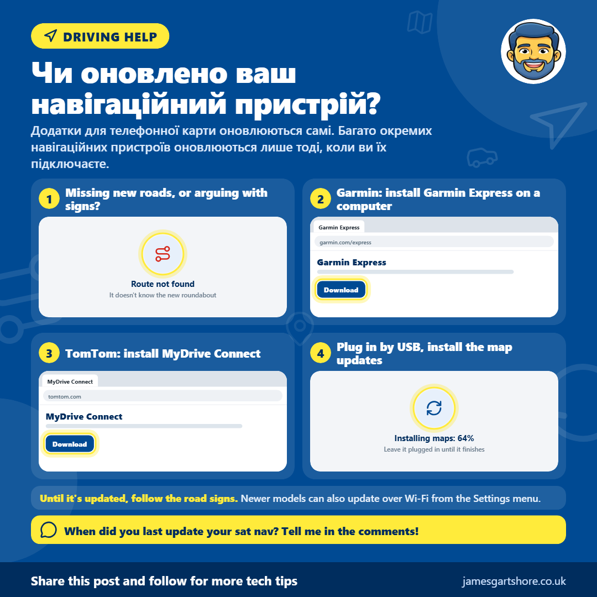
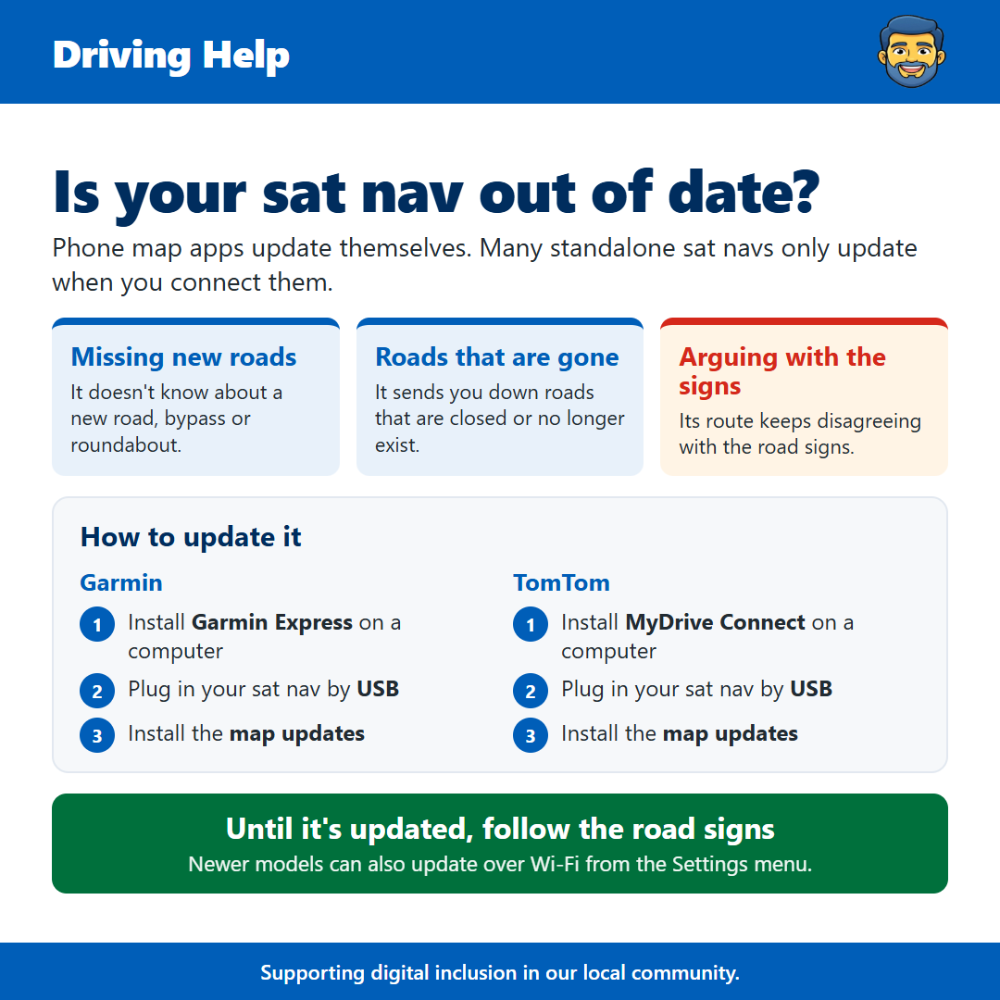

Sat Nav Update
Від Джеймса Гартшора · · Повсякденні технології
See the old version of this poster

Download the old versionПривіт усім, ось швидка порада для тих, хто досі використовує навігатор у машині.
Картографічні додатки на вашому телефоні, як Google Maps, оновлюються автоматично. Багато окремих навігаторів не оновлюються. Вони отримують нові карти лише тоді, коли ви підключаєте їх до комп'ютера або Wi-Fi, тому якщо ваш не оновлювався деякий час, він може працювати за старими картами.
Признаки того, що ваш може бути застарілим, включають не знання про нову дорогу чи кільцеву дорогу, спроби відправити вас по закритій або вже не існуючій дорозі, або те, що він веде вас іншим шляхом від того, що кажуть дорожні знаки.
Оновлення зазвичай безкоштовне і досить просте. Для Garmin встановіть Garmin Express на комп'ютері та підключіть навігатор за допомогою його USB-кабелю. Для TomTom це те саме, використовуючи програму під назвою MyDrive Connect. Нові моделі часто можуть оновлюватися через Wi-Fi з меню налаштувань. Якщо ваш навігатор вбудований у вашу машину, перевірте додаток або веб-сайт виробника автомобіля або запитайте у дилера.
До оновлення завжди довіряйте дорожні знаки, якщо вони суперечать вашому навігатору.
Якщо ви не впевнені, як оновити свій, надішліть мені повідомлення і я зроблю все можливе, щоб допомогти. Не соромтеся передати це будь-кому, хто може знайти це корисним.